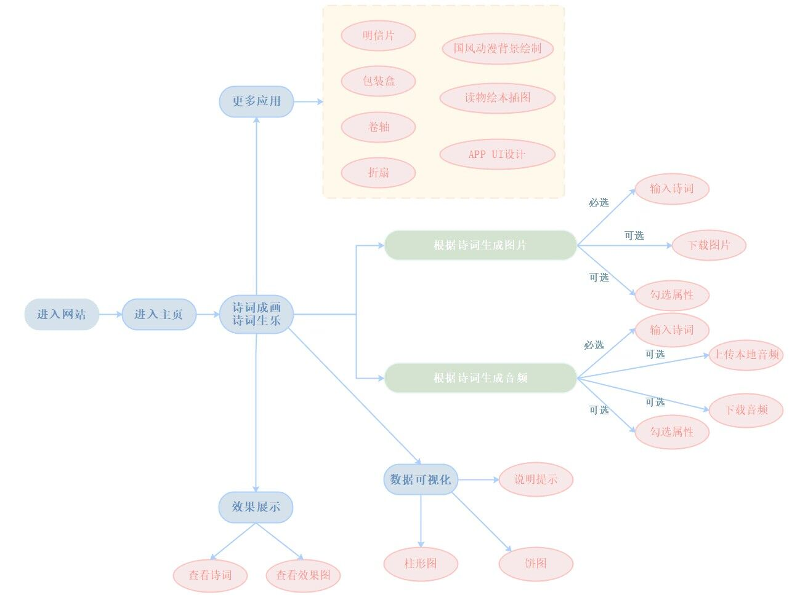

诗·画·乐
诗词成画
诗词生乐
数据可视化
更多应用
返回主页
诗意画境·弦歌之韵 & 数据可视化
诗意画境·弦歌之韵----基于中文文生图大模型“太乙”和AI生成音乐模型“Musicgen”的AI诗词作画生乐系统
更新
更新
模型创新 & 自学习
数据增强——引入自学习机制
为针对广大用户提供个性化的文生图服务，我们为"太乙"大模型添加了自学习机制， 即在远端服务器保存每个用户每次输入的诗词数据，经过分词处理和词频统计后， 赋予一定权重并重新作为数据集输入， 从而生成更贴合诗词意境以及用户需求的图片，同时在页面显示用户累计输入诗词中分词的统计数据 （默认情况则为上一次的历史输入统计） 并可根据用户输入内容实时进行可视化展示。
使用流程

Loading